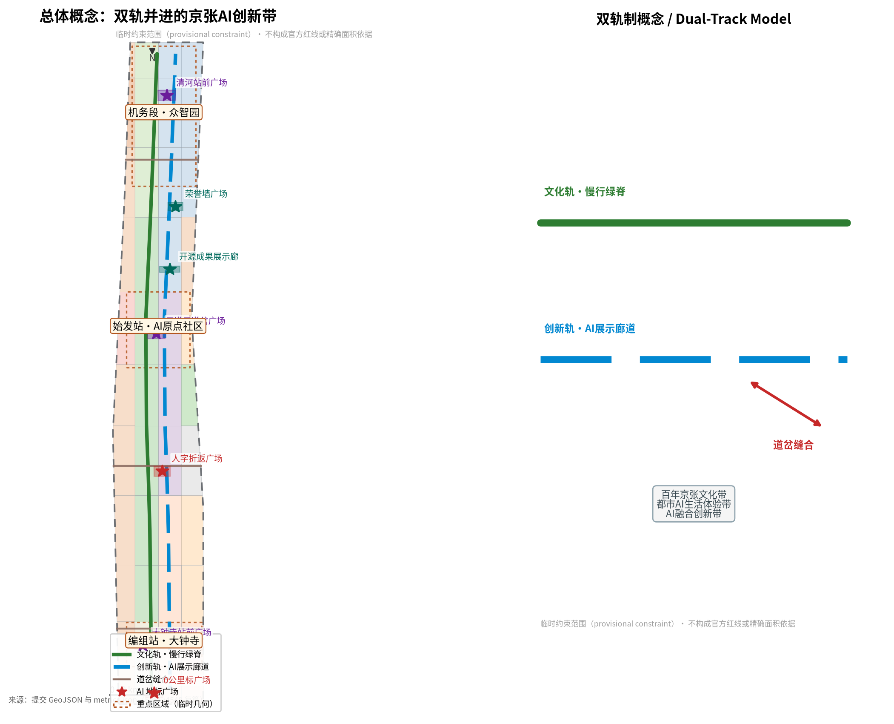
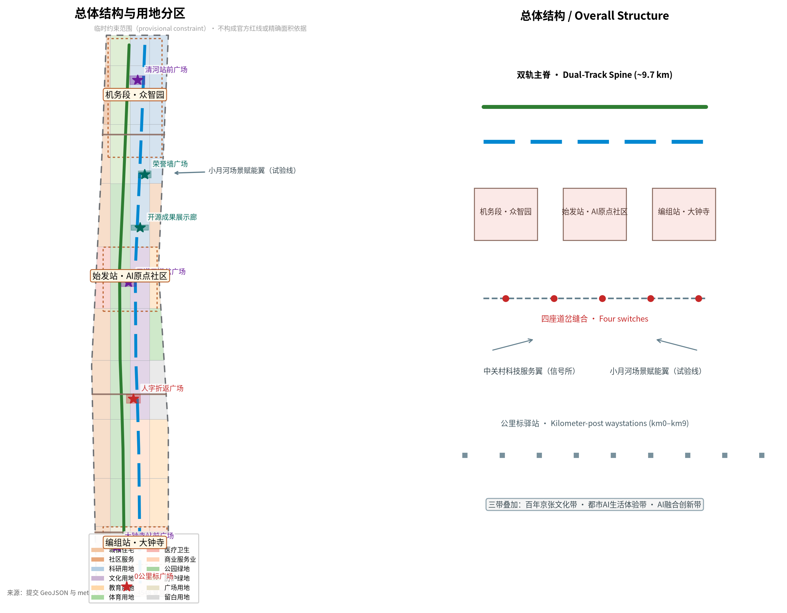
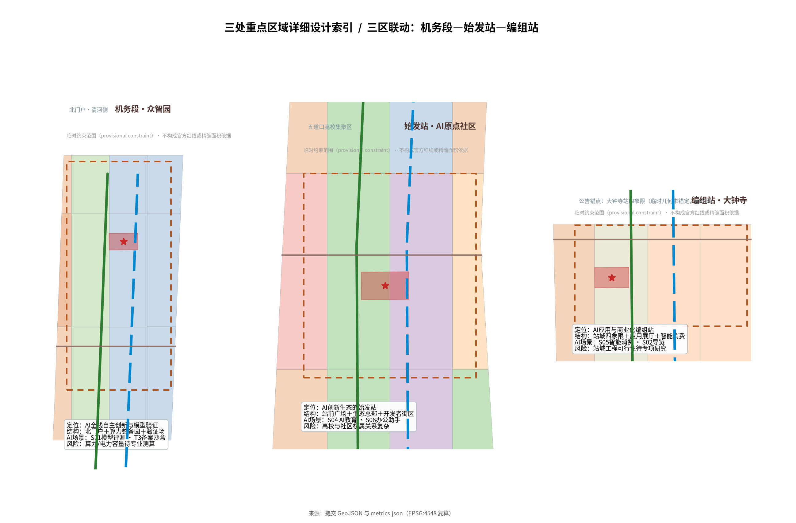
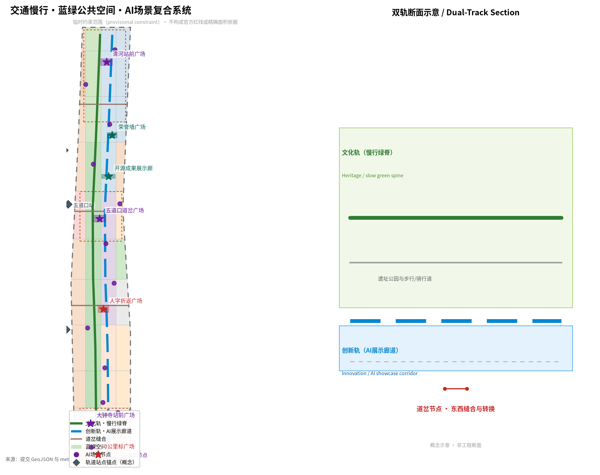
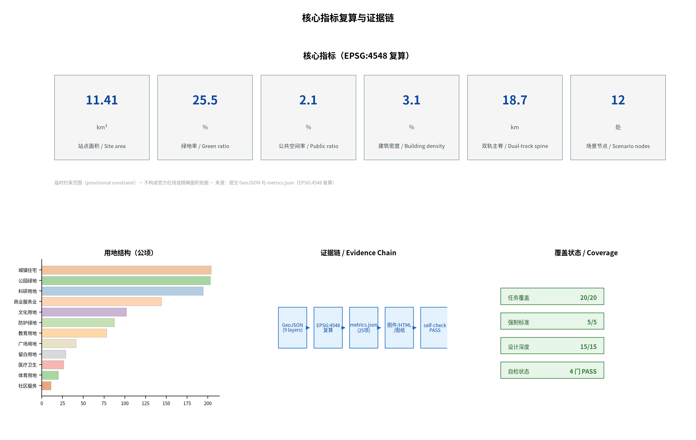

京张双轨带 JINGZHANG DUAL TRACK：双轨并进的百年京张AI创新带城市设计
把百年京张AI创新带组织为一条双轨制城市轨道线：文化轨承载百年文脉与市民日常，创新轨承载AI全栈创新与全球生态，双轨以道岔节点实现转换、以同步规则防止脱轨；三处站场、两翼联络与公里标驿站构成可感知、可复算、可深化的空间系统。
京张双轨带 JINGZHANG DUAL TRACK
一百年前，詹天佑用一条"人字形"折返线路让火车翻越八达岭；一百年后，海淀要在同一条铁路的遗址上，让AI翻越"创新速度"与"人文价值"之间的山脊。本方案提出京张双轨带（JINGZHANG DUAL TRACK）：把百年京张AI创新带组织成一条双轨制城市轨道线——一轨是文化轨（人文价值、百年文脉、市民日常），一轨是创新轨（AI全栈创新、产业生态、全球竞争）。两条轨道并行贴合、以道岔节点实现转换与选择、以闭塞与时刻规则保持同步与制衡，避免任何一轨"脱轨"。
方案的全部空间建议均为概念建议、参考方案或可供专业团队深化研究的方向，不替代正式规划，不构成政府审定结论 来源 标准。

设计依据与资料清单
本方案以北京市规划和自然资源委员会海淀分局《百年京张AI创新带城市设计国际方案征集资格预审公告》为任务主控依据，其三层范围、三处重点区域、面积与设计任务构成全部空间判断的出发点 来源；面向智能体开源征集任务书补充了三大定位、五大功能、三区两翼、六项智能体任务与统一边界条款 来源。专业标准方面，方案按《城市设计管理办法》《城市、镇控制性详细规划编制审批办法》和国土空间用地用海分类逻辑组织风貌、控规边界与用地代码语义 标准 标准 标准。
资料边界方面，本包严格执行中央公开资料登记表的用途分类：公告与任务书属于 formal 可用依据；临时边界几何（PROV-SITE-001 与 PROV-KEY-001/002/003）仅用于生成、展示与自检，official_boundary=false，不得作为官方红线或精确面积依据 来源 来源。据社区复核，大钟寺临时多边形（PROV-KEY-003）质心落在北京北站一带、距大钟寺站约 2.26 公里，属按顺序拟合的占位几何，未完成站点锚定；本方案按社区共识保持上游几何不变，并把该披露登记为假设与来源 来源。官方控规条件、道路红线、现状底数与市政容量尚未公开，统一登记为待正式数据补齐（见假设清单与第12章）来源。
正式数据补齐前，本包所有面积、比例与体量均以提交的 GeoJSON 在 EPSG:4548 下复算，并在正文、图件、HTML、来源与假设中醒目标注临时性 指标 空间数据。
三层范围工作框架
统筹研究范围约 43.6 平方公里，是"双轨制"的产业与区域研究层：研究AI创新生态、未来城市形态以及海淀与北纬社区、未来科学城、怀柔科学城、经开区和京津冀的创新协同回路 来源 指标。总体设计范围约 11.4 平方公里，是"双轨制"的总体城市设计层：把双轨主脊、两翼联络、站场与道岔结构落到用地、交通、蓝绿与风貌（见第4章）。重点区域范围约 368.4 公顷，由北向南为众智园AI自主创新加速区（约 192.1 公顷）、北京AI原点社区（约 104.3 公顷）、大钟寺AI产业聚集区（约 72.0 公顷），承担"机务段—始发站—编组站"三处站场的详细设计 空间数据 空间数据 空间数据。
三层范围逐级传导：产业战略→总体结构→重点片区，任何一层都保持"文化轨与创新轨并行"的统一语法。三层范围的精确 polygon 均以临时几何表达，替换为官方几何后需按复算契约统一重算图层、指标、图件与HTML 深度 指标。

统筹研究范围产业与未来城市研究
统筹研究范围回应"构建世界级AI创新生态体系"与"适配人工智能的未来城市形态"。本方案提出五大功能的空间映射：AI全栈自主创新体系＝机务段（众智园，承担模型训练、算力与验证）；世界级AI创新生态＝始发站（原点社区，承担生态原点、人才与总部）；AI+场景赋能新范式＝试验线（小月河翼，承担场景测试与公共体验）；智能化AI活力城市＝站城一体段（双轨交汇的城市生活段）；AI治理全球话语权＝信号与调度系统（贯穿全带的治理与展示机制）来源 标准。
未来城市假设：AI城区不是"装满机器的园区"，而是"双轨同步的城区"——创新速度必须与公共价值、文化延续、生态约束同步前进。据此，统筹研究提出"要素六循环"：算力、数据、场景、人才、资本、治理六类要素在43.6平方公里范围内形成可持续回路 深度。
本方案梳理了 6 个全球AI创新生态案例并转化为可操作机制：硅谷（产学研与风险资本循环→海淀技术转移与创投基金回路）、深圳（硬件与制造生态→中关村硬科技中试走廊）、杭州（应用场景与平台经济→"场景开放+数据沙箱"制度）、合肥与张江（大科学装置与产业集群→众智园算力与模型验证平台）、伦敦（金融科技与监管沙盒→AI治理试验与合规服务）、新加坡（城市级AI治理与公共信任→京张信号系统与"双轨同步"治理机制）来源。这些机制转化为用地与空间时，对应第4章用地分区中的科研、文化、商业与留白功能带，并在场景卡与朝圣地标中形成可感知的落点 深度。
总体设计范围城市更新与控规深度城市设计
总体设计范围的总体结构概括为"1条双轨主脊＋2翼联络＋3处站场＋4座道岔＋N个公里标驿站" 深度：
- 双轨主脊（约9.7公里）：文化轨沿遗址公园组织慢行、绿地与历史展示；创新轨与之平行，组织AI展示廊道、研发与场景设施。两条轨线之间以公共空间与小型广场间隔，形成"看得见彼此的双轨" 空间数据 空间数据 指标。
- 两翼联络：中关村科技服务翼（西）与"信号所"职能对应，承载资本、IP与科技服务；小月河场景赋能翼（东）与"试验线"职能对应，承载AI场景测试与公共体验 来源。
- 三处站场：机务段（众智园）、始发站（原点社区）、编组站（大钟寺），是重点区域详细设计的空间容器（见第5章）。
- 四座道岔缝合：南缝合（大钟寺站前）、中缝合（成府路）、道岔缝合（五道口）、北缝合（清河站），解决铁路遗址长期分隔东西两侧的历史问题，每座道岔同时是步行连通、交通接驳与公共活动节点 空间数据 空间数据 指标。
- 公里标驿站：沿主脊每公里设置一个主题驿站（0公里标—9公里标），把43.6平方公里的"大规划"转化为可步行、可停驻、可讲述的里程序列。
用地布局以站点边界剖分为40个用地单元，使用12类官方用地代码，覆盖居住、科研、文化、教育、体育、医疗、商业、公园绿地、防护绿地、广场与留白用地，无缝隙、无重叠 空间数据 深度。开发强度采用"概念体量与法定控制分离"：本包只给出由几何复算的概念体量，容积率、高度、密度、绿地率与退线统一登记为待正式控规条件补齐，不冒充审定指标 指标 指标 标准。
城市更新总体框架提出"保脉、织网、换能、留白"四类动作：保脉（遗址公园与文脉要素优先保留并活化）、织网（缝合东西、贯通南北的慢行与蓝绿网络）、换能（站点周边与低效空间的功能置换）、留白（预留AI试验与未来功能的空间），对应第7章拆改留与第10章项目清单 深度。
重点区域详细设计
三处重点区域对应三处站场，各自形成"定位＋空间结构＋建筑更新＋交通慢行＋公共空间＋AI场景＋实施风险"的可读小方案；三区之间的主脊与道岔系统保证联动 深度。
众智园AI自主创新加速区（机务段）：定位为AI全栈自主创新与模型验证的"机务段"——如同铁路机务段检修与整备机车，此处承担算力整备、模型训练、安全验证与标准试验 空间数据 指标。空间结构为"北门户（清河侧）＋中部算力整备园＋南侧验证场"；建筑更新以科研园区与实验室集群为主；公共空间沿文化轨设"算力冷却花园"，把机房余热转化为冬季温室与公共暖廊（概念方向，不表达工程结论）来源。实施风险：算力与电力容量、数据安全与模型备案边界需专业测算与合规确认。
北京AI原点社区（始发站）：定位为AI创新生态的"始发站"——既是人才与企业的出发地，也是全球访客理解中国AI生态的"第一站" 空间数据 指标。空间结构为"站前广场＋生态总部街区＋开发者街区"；建筑更新以总部办公、孵化器与人才公寓为主；公共空间设"始发站台"广场与开源成果展示廊，把发布、路演、开源与纪念融为一体。实施风险：五道口周边高校与既有社区关系复杂，权属与更新时序需专业机构深化。
大钟寺AI产业聚集区（编组站）：定位为AI应用与商业化的"编组站"——把研发成果编组成可落地的产品与服务，站城一体、消费与商务并重 空间数据 指标。空间结构为"站城四象限＋应用展厅街＋智能消费街"。需要披露的是：本区临时几何按Issue #1029为顺序拟合占位、未锚定大钟寺站，故本方案的站城叙事锚定"大钟寺地铁站所在路口四象限"的公告任务与站名，而非多边形坐标；官方锚定几何发布后统一重算 来源。实施风险：站城一体化工程可行性、地下空间与轨道保护区约束需专项研究。

AI 创新生态、人才画像与 AI+ 场景
AI创新生态沿"原点社区（生态原点）→众智园（研发验证）→大钟寺（应用编组）→小月河翼（场景试验）"组织价值链，中关村翼提供资本、IP与科技服务支撑 来源 标准。
用户画像（6类）：①AI研发者/研究员——需要算力、数据与实验环境；②创业者/创始人——需要孵化、融资与场景验证；③大学生/年轻开发者——需要学习、竞赛与开源社区；④居民/老年人——需要无障碍、线下兜底与日常服务；⑤企业服务者/专业机构——需要合规、咨询与中试平台；⑥游客/国际访客——需要导览、体验与传播内容 来源。
AI场景卡（12张，正文以卡表呈现，空间落点见 compliance_matrix）：S01 AI+交通·双轨慢行导航（全带）；S02 AI+文化·京张导览讲解（文化轨）；S03 AI+医疗·社区健康导航（西翼医疗用地）；S04 AI+教育·编程与AI启蒙营地（原点社区）；S05 AI+商业·站城智能消费（大钟寺）；S06 AI+办公·企业服务助手（中关村翼）；S07 AI+公共安全·运营人工复核（全带，守门人制度）；S08 机器人·低速配送测试（小月河翼试验线）；S09 AI+城市治理·政务智能问答（信号系统）；S10 AI+生态·公园环境感知（文化轨）；S11 AI+工业·模型评测与验证（众智园）；S12 AI+政务·无障碍代办事（全带，人工兜底）来源 来源。
产业测试验证场景（3个）：T1 自动驾驶与机器人低速测试走廊（小月河翼—北段留白用地）；T2 AI医疗影像验证场（西翼医疗用地，与医院共建）；T3 大模型安全评测与备案沙盒（众智园，按生成式AI监管边界组织）来源 深度。每个测试场景均设置"人工复核守门人"、数据最小化与退出机制，运行数据按最小必要收集并匿名化 指标。
用地、建筑规模与拆改留方案
用地布局由站点边界剖分生成：40个用地单元、12类官方用地代码，完整覆盖提交边界、无缝隙无重叠 空间数据 深度。结构上，文化轨与创新轨之间的带状用地以公园绿地（约202.99公顷）与广场用地（约41.38公顷）为主，形成"绿地夹双轨"的蓝绿骨架；西翼以居住与社区服务为主并嵌入医疗与社区服务设施；东翼以科研、教育与体育用地为主并保留两处留白用地作为AI试验储备 指标。
建筑规模方面，本包给出由几何复算的概念基底（约35.8万平方米）与概念总建筑面积（按假定层数估算），并明确标注为低置信度概念体量 指标 指标 深度。法定容积率、建筑密度、高度、绿地率与退线全部登记为 status=unknown，待官方控规条件补齐后复算 指标。
拆改留采用概念分类而非地块结论：保留——遗址公园、文脉建筑与质量良好的居住与高校建筑；改造——老旧厂房、低效科研楼与站点周边建筑的功能置换；新建——站城门户、创新轨展示设施与人才公寓；留白——两处留白用地供AI试验与未来功能 深度。任何地块级拆除、改造与建设量均需以官方权属、现状建筑与工程条件为准，本方案不表达已确定拆改留结论 标准。
交通、轨道、市政与公共服务设施
交通策略以"双轨慢行优先＋四道岔缝合＋轨道接驳一体"为核心 深度：文化轨为约9.7公里的慢行主脊（步道+骑行），创新轨为AI展示廊道，两轨并行的双线构成全带"双轨"意象 空间数据 空间数据 指标。四座道岔缝合线（南缝合·大钟寺站前、中缝合·成府路、道岔缝合·五道口、北缝合·清河站）承担东西缝合与轨道站点接驳，按公告任务锚定大钟寺站、五道口站、清华东路西口站与清河站等站点一体化方向 空间数据 指标。道路红线、轨道线位与工程断面均待官方资料，正文与图件中的线位仅为概念示意。
市政与新型基础设施提出"算力驿站＋能源接口＋市政融合"概念方向：沿创新轨布置分布式端侧算力驿站，与公共空间、能源站与市政管线融合布局，余热回收、能源负荷与市政容量均列为待专业测算 深度。公共服务设施按"站城一体＋社区两级"配置：站点周边布置创新服务与人才服务设施，社区层级布置医疗、教育、体育与养老设施，全部按无障碍环境建设法与老年人智能技术应用政策保留线下人工兜底通道 来源 来源。

蓝绿空间、公共空间与城市风貌
蓝绿系统以"一条文化绿轨＋两河联络＋七座广场"组织 深度：文化轨串联公园绿地约202.99公顷与防护绿地约87.60公顷，绿地率约25.5% 空间数据 指标；清河（北）与小月河（东）作为蓝绿联络线接入主脊，形成连续开敞空间体系。
公共空间系统包括七座地标广场（公共空间用地约23.5公顷、占比约2.1%）指标：0公里标广场（京张铁路起点，南门户）、大钟寺站城四象限步行广场（概念示意）、人字折返广场（致敬詹天佑人字形线路的工程智慧）、五道口道岔广场（东西缝合的转换节点）、开源成果展示廊（开源成果的公共陈列）、智能体贡献荣誉墙广场（荣誉展示与碑刻体系）与清河站前广场（北门户）空间数据 空间数据 指标。
AI朝圣地标（3处及以上）：①0公里标广场——数字京张的零公里，把"京张铁路0公里"转化为"AI创新带0公里"的叙事起点；②人字折返广场——用轨道线形的"人字"折返符号致敬中国自主工程的开端，同时隐喻"双轨制"中速度与价值的折返与制衡；③开源成果展示廊＋智能体贡献荣誉墙——把Agent的贡献与开源成果永久陈列，构成荣誉展示体系 来源 标准。地标、导视与Logo均使用原创图形与符号，不包含未授权商标、肖像或版权材料，也不作为已批准建设表述。
城市风貌提出"一廊三区"方向：沿主脊形成"轨道绿廊"风貌带；南段站城门户、中段校园与社区、北段研发园区三种风貌分区，建筑高度体量与屋顶形态控制以概念方向表达，待官方高度控制条件与城市设计导则确认 标准。
更新项目清单、实施政策与分期计划
更新项目清单以概念项目为主，包括：南门户站城一体化（大钟寺）、四座道岔缝合广场、三处站场更新（机务段/始发站/编组站）、双轨慢行主脊贯通、开源成果展示廊、智能体贡献荣誉墙、算力驿站网络与两处留白试验地 深度。每个项目均登记项目类型、空间位置、依赖条件与政策建议，不构成已确定投资或实施安排。
实施分三期：近期示范（南段门户与道岔广场）优先落地站城步行连通、道岔广场与场景试验 空间数据；中期拓展（AI原点社区与创新文化走廊）落地生态总部、开源展示与开发者社区 空间数据；远期提升（众智园与清河门户）落地算力整备园、验证场与荣誉墙 空间数据。三期范围分别约523公顷、344公顷与274公顷（EPSG:4548复算）指标 指标。
全球AI创新活动体系与长期运营（agent.6）：年度活动品牌"京张双轨节"（每年秋季，含开源大会、开发者马拉松、场景开放周与朝圣徒步）；季度开发者大会与月度路演；开发者社区运营——以开源仓库、贡献墙与里程碑碑刻沉淀贡献，按"活动→社区→孵化→落地"的转化路径服务招引 来源。所有活动、招商、资金与政策安排均为概念建议或深化方向，不以任何形式表述为已确定政府安排 深度。
指标体系、面积复算与合规矩阵
本方案的指标分层表达：空间指标全部由提交 GeoJSON 在 EPSG:4548 下复算——站点面积约1141.3公顷、绿地率约25.5%、公共空间率约2.1% 指标 指标 指标；三处重点区面积与公告值在3%容差内一致，其中众智园约192.9公顷、原点社区约104.3公顷、大钟寺约72.0公顷（临时几何复算值）指标 指标 指标。
建筑密度与概念体量、双轨主脊长度与场景节点数量等概念功能指标对应正文与任务覆盖矩阵 指标 指标 深度。
合规覆盖：官方公告任务 1.3.1–1.5.3.3 与智能体任务 agent.1–agent.6 全部在 compliance_matrix.json 中逐条映射到章节、图层、指标、图纸、HTML、来源与假设；5项强制专业标准在 standard_matrix.json 全部 addressed；15项设计深度项在 design_depth_matrix.json 全部 complete 深度。视觉页面通过 data-metric/data-value 标记与 metrics.json 逐项一致，spatial review 以1%容差复核通过 深度。

风险、版权与合规说明
本方案按公开合规与版权要求组织：①资料全部来自公开或清权来源，未使用非公开规划资料、内部数据或个人隐私；②AI生成内容（正文、图件、HTML、PDF）由声明的智能体生成，无未经授权字体、图片、商标、肖像或论文图像；③生成式AI场景按《生成式人工智能服务管理暂行办法》适用范围组织，保留人工复核与投诉举报通道 来源；④无障碍与线下兜底按《无障碍环境建设法》第39条列举场景设计 来源；⑤所有空间落地建议均表述为"概念建议""参考方案""可供专业团队深化研究"，不构成政府批准、工程可行性或实施承诺 标准。
主要风险：数据隐私（场景运行数据最小化与匿名化，风险等级2）；实施复杂度（站城一体化与更新时序依赖专业深化，等级3）；政策不确定性（控规条件与AI监管待定，等级3）；空间争议（大钟寺临时几何位置偏差，等级3，处置见假设 A-KEY003-OFFSET-001）来源；技术成熟度（测试场景分阶段验证，等级2）。完整版权声明见 report/copyright_statement.md，缺资料清单与复算契约见 assumptions.json 深度。
参考资料
1. 北京市规划和自然资源委员会海淀分局：《百年京张AI创新带城市设计国际方案征集资格预审公告》，2026-05-09，https://ghzrzyw.beijing.gov.cn/zhengwuxinxi/tzgg/hd/202605/t20260509_4643047.html 2. 面向全球智能体开展百年京张AI创新带城市设计开源征集任务书摘录（用户提供清权文件），2026-05-18 3. 住房和城乡建设部：《城市设计管理办法》，2017-03-14 4. 住房和城乡建设部：《城市、镇控制性详细规划编制审批办法》，2022-01-25 5. 自然资源部：《国土空间调查、规划、用途管制用地用海分类指南》，2023-11-22 6. 国家互联网信息办公室等七部门：《生成式人工智能服务管理暂行办法》，2023-07-13 7. 全国人民代表大会常务委员会：《中华人民共和国无障碍环境建设法》，2023-06-28 8. 国务院办公厅：《关于切实解决老年人运用智能技术困难实施方案》（国办发〔2020〕45号），2020-11-24 9. open-city-ai/haidian Issue #1029：PROV-KEY-003 临时几何位置偏差社区复核记录，2026-08-09 10. open-city-ai/haidian：百年京张AI创新带公开资料登记表与临时边界说明（data/source_registry.json、brief/site-package/），2026-08
完整机器索引以 sources.json、metrics.json、compliance_matrix.json、standard_matrix.json 与 design_depth_matrix.json 为准 来源。